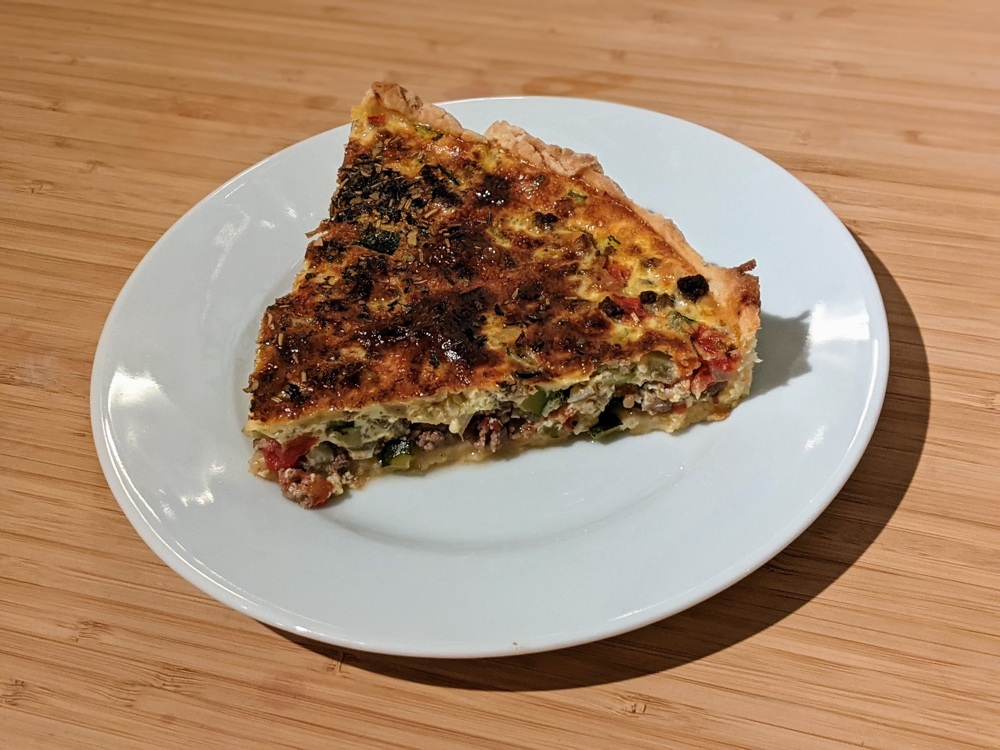

Tarte bœuf-courgettes

Pour 3/4 personnes :
- 300g de bœuf haché
- Une courgette
- Un oignon
- Une tomate
- Trois œufs
- 20cl de crème liquide
- Une pâte feuilletée ou brisée
- (Facultatif) Un peu de noix de muscade
- Des herbes de Provence, ou du thym
- Sel, poivre, huile d'olive
- Éplucher et couper l'oignon en petits bouts, le faire revenir dans une poêle avec de l'huile d'olive et la viande émiettée.
- Faire préchauffer le four à 220°C. Couper la courgette et la tomate en petit dés, et les ajouter dans la poêle lorsque la viande est cuite.
- Étaler la pâte feuilletée sur un plat à tarte, la piquer un peu partout, et la mettre au four quelques minutes pour qu'elle durcisse un peu.
- Battre les œufs à la fourchette dans un bol. Saler, poivrer, muscader, ajouter la crème. Retirer la pâte du four, et mettre le mélange légumes, viande et migaine (c'est comme ça qu'on appelle le mélange œufs/crème fraîche) par-dessus.
- Enfourner une demi-heure environ (jusqu'à ce que ça cesse d'être liquide, en gros). Mettre quelques herbes sur le dessus pour que ça fasse joli. Servir chaud avec une salade.